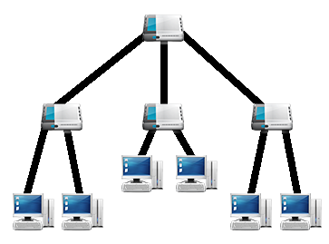

Redes de Computadores
- JONATHAN NUNES DE PROENÇA
- JOSÉ ANTONIO DA SILVA JÚNIOR
- JOSÉ REINALDO LISBOA
- LUCAS GUILHERME DE ARRUDA
- RODRIGO SOUTO FERREIRA
- TIBÉRIO AUGUSTO DOS SANTOS
O que iremos apresentar ?
- Introdução
- Evolução das Redes de Computadores
- Redes Cabeadas
- Redes não Cabeadas
- Equipamentos
- Topologias
- Protocolos de Comunicação
Introdução
Definição: As redes de computadores foram criadas para permitir a comunicação e o compartilhamento de recursos entre diversos dispositivos em um mesmo espaço físico. A comunicação se dá através de um meio físico como vetor para a propagação do sinal;
Evolução das Redes de Computadores
- 1961 - Leonard Kleinrock propõem um sistema de transferência de informações através da comutação de pacotes (troca de informações atráves de pacotes), as informações são particionadas em pacotes (unidade de informação) e enviadas por rotas diferentes através da decisão de computadores dedicados;

Evolução das Redes de Computadores
- 1964 – 1967 – A partir desse trabalho inicial surgem diversos outros e Lawrence Roberts do MIT que liderava o projeto de ciência de computadores na ARPA (Agência de Pesquisa Avançada), apresenta os seus estudos que ele denominou de ARPAnet, que seria o percursor da internet;
Evolução das Redes de Computadores
- 1969 – A rede ARPAnet entra em atividade e interliga inicialmente 4 universidades: Stanford Research Institute, Universidade da Califórnia, Universidade de Santa Barbara e Universidade de Utah. o link de comunicação que as interligava era uma rede telefônica adaptada que transmitia a meros 50kbps;
- A rede que inicialmente era pequena, cresceu de forma muito rápida e já não era mais possivel manter e distribuir uma lista das máquinas conectadas. O problema foi resolvido em 1980 com o "Domain Name System" (DNS), onde as máquinas poderiam ser nomes.
Evolução das Redes de Computadores
- 1973 - Robert Metcalfe dos laboratórios da Xerox de Palo Auto (PARC) inicia o desenvolvimento do que viria a ser o padrão ethernet, o mais utilizado em redes locais. Esse primeiro padrão só transmitia a 2.94 megabits e interligava 256 estações;
Equipamentos
Placa de Rede: Encarregada de tudo que chega e sai de dados do computador. Possui um endereço físico único (MAC) que vem de fábrica, ela é responsável também pela conversão dos dados que chegam para que o computador compreenda.

Ethernet 10Base-T Combo ISA e Ethernet 10GBase-T
Equipamentos
Concentradores: Centralizam os hosts da rede, por exemplo, em uma rede em anel todos os hosts são ligados á um concentrador, que pode ser um hub;

Switch - Cisco Catalyst 2900
Equipamentos
Bridges: Trabalham com sub-redes, supondo que queiramos dividir uma rede em sub-redes. Bridges também são capazes de interligar redes que utilizam protocolos distintos;

Bridge Ethernet - Corinex
Equipamentos
Hub: É o equipamento que categorizamos como "burro", pois, ele é capaz apenas de repassar, repetir o que recebe em broadcast (para todos os hosts), além de não tratar de nenhuma forma os dados;
Hub Ethernet 8 portas
Equipamentos
Switches: Faz a mesma função do HUB mas, de uma forma melhorada. O switch faz um tratamento inicial dos dados antes de repassá-lo para a próxima camada, além de transmitir os dados em unicast (apenas para o computador destino, por meio de conexão direta);

Stackable Switch - Netgear FSM7328S
Equipamentos
Roteadores: Possui características semelhantes as das bridges, mas os roteadores interligam redes de diferentes segmentos em uma mesma rede. Os roteadores são responsáveis por identificar a melhor rota para a transmissão dos dados, evitando assim colisões de pacotes;
Roteadores - Cisco Series 2900 e 1941
Equipamentos
Ponto de Acesso (Acess point): Pode ser usado como repetidor por receber um sinal e tratá-lo (aumentá-lo) para repetí-lo, mas tem como função principal prover acesso á rede por wireless. Podemos considerá-lo um HUB wireless.

Access Point - TP-Link WDR7500
Equipamentos
Placa de rede Wireless: É uma placa de rede (PCI ou USB) com antena integrada, utilizada para receber sinal wireless de um roteador ou um access point e prover acesso á um computador, por exemplo.

Placa de rede Wireless Asus PCE-AC68
Topologias
Definição: A palavra Topologia deriva do grego, Topos=Forma e Logos=Estudo, portanto é a maneira como é estruturada a rede, a topologia faz a conexão entre os dispositivos da rede.
Topologias
Ponto a ponto: Nessa topologia, dois computadores são interligados por um meio físico.
Topologias - Ponto a ponto
-
Vantagens:
- Baixo custo, além de uma fácil implementação;
- Boa performance na troca de dados;
- É uma rede sem administração;
- Baixa segurança;
Topologias
Barramento: No barramento apenas um cabo coaxial interliga todos os dispositivos da rede. A comunicação nesta topologia é toda em broadcast, ou seja, os dados passam por todos da rede, mas, apenas o receptor destino interpreta e acessa os dado.

Topologias - Barramento
-
Vantagens:
- Fácil expansão da rede;
- Fácil instalação;
- Requer poucos cabos;
- Difícil de se identificar problemas;
- Qualquer falha no cabo principal paralista toda rede;
- Alto fluxo de tráfego deixa a rede lenta;
Topologias
Anel: Redes com topologia em anel trabalham em um circuito fechado, ou seja, um mesmo cabo passa por todos os nós. A comunicação entre os nós segue uma direção e cada nó serve de repetidor para o próximo, até que o dado chegue ao destino.

Topologias - Anel
-
Vantagens:
- Desempenho uniforme, ou seja, igual á todos;
- Fácil instalação devido a baixa quantidade de cabos necessários;
- Todos recebem a mesma informação;
- Se um nó parar todos os outros param
Topologias
Estrela: Semelhante as redes ponto a ponto, esta topologia concentra todos os nós em um centralizador (hub ou switch), que por sua vez administra toda a rede.
Topologias - Estrela
-
Vantagens:
- Mais tolerante a falhas;
- Pode-se facilmente modificar ou adicionar um novo nó a rede;
- Falhas em nós específicos não paralisam a rede por completo, devido ao gerenciamento do centralizador.
- Alto custo para cabeamento;
- Caso um centralizador principal falhe, a rede toda é afetada;
Topologias
Árvore: É formada por um conjunto de topologias estrelas interligadas com outros centralizadores. Geralmente temos um centralizador principal, cujo qual está ligado a um servidor por exemplo.
Topologias Árvore
-
Vantagens:
- Pode unir vários tipos de topologias por meio de concentradores;
- Muito usada atualmente;
- Problemas podem ser diagnosticados com exatidão;
- Instalação um pouco mais complicada que outras;
- Pode se tornar uma rede cara, devido aos equipamentos necessários;